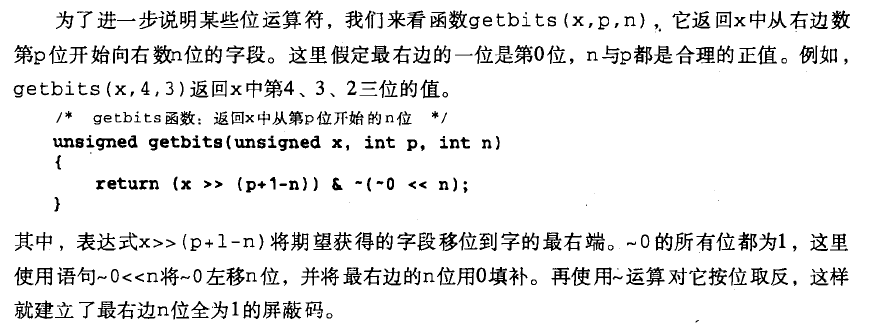
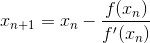

打赏

第一题
1.举例说明表达式的值不确定的情况
2.结构体的大小是否等于各结构成员之和
1.表达式的值和计算次序不确定，就是指复合求值的时候，C语言标准未明确规定计算次序可能导致的不同平台不同编译器下运算得到的结果不同，例如k=(k++)+(k--)，这是一个合法的表达式，但k的值取决于自增自减运算次序和加法的先后。
以下摘自 <Pointers on C>P83

2.结构体的大小并不总等于所有结构体成员之和，例如一个结构体中有char类型与double类型的成员，那么结构体的大小是2*sizeof(double)，而不是sizeof(char)+sizeof(double)，这是为了寻址方便而这样规定的。
第2题
定义函数getBits(int x int p int n)，返回值是整数x的从第p位起向低位数的共n位。例如getBits(x,4,3)返回x的第4位，第3位和第2位
K&R上的原题，第39页。但所谓“位”，看函数名是Bits，要想到这是返回一个二进制位，而不是十进制位。
第三题，设计一个函数sort()用于排序，要求数据元素个数，数组中元素的类型和排序标准都要由函数参数来指定。排序算法自定。
void swap(const void* a, const void* b, int size)
{
assert(a != NULL && b != NULL);
char tmp = 0;
int i = 0;
while (size > 0) {
tmp = *((char*)a + i);
*((char*)a + i) = *((char*)b + i);
*((char*)b + i) = tmp;
++i;
--size;
}
}
void Qsort(void* base, int left, int right, int size, int (*cmp)(const void* a, const void* b))
{
assert(base != NULL && size >= 1 && cmp != NULL); /* left may be < 0 because of the last - 1 */
if (left >= right) return;
char* pleft = (char*)base + left * size;
char* pkey = (char*)base + (left + (right - left) / 2) * size;
swap(pleft, pkey, size);
int last = left;
char* plast = (char*)base + last * size;
for (int i = left + 1; i <= right; ++i) {
char* pi = (char*)base + i * size;
if (cmp(pi, pleft) < 0) {
++last;
plast = (char*)base + last * size;
swap(pi, plast, size);
}
}
swap(pleft, plast, size);
Qsort(base, left, last - 1, size, cmp);
Qsort(base, last + 1, right, size, cmp);
}
第四题，请你设计函数cubeRoot(x),返回值为x的立方根，算法自定，但请尽可能使算法复杂度低
简单的数学计算类问题，求x的立方根，也就是求关于t的方程t3=x的解，也可看作求f(t)=t3-k的零点
函数零点的近似解可以用二分法，也可以用牛顿切线法，都是基础数学的知识。
double cubeRoot(double x)
{
double lwbd=0,upbd=x,mid;
double epsilon=1e-5;
if(x<1)
upbd=1; // root is in the range [lwbd,upbd]
while(upbd-lwbd>epsilon)
{
mid=lwbd+(upbd-lwbd)/2;
if(mid*mid*mid-x<0)
lwbd=mid;
else
upbd=mid;
}
return mid;
}
切线法，要知道牛顿切线公式

double cubeRoot(double x)
{
double yn=1,yp=x; double epsilon = 1e-5;
while(1)
{
yn=yp-(yp*yp*yp-x)/(3*yp*yp);
if(fabs(yp-yn)<epsilon)
break;
yp=yn;
}
return yn;
}
两个班的成绩分别存放在两个班的成绩分别存放在两个文件当中。 每个文件有多行， 每行都是由空格分隔的学号、姓名和成绩。现在要将两个班的成绩合并到一起进行排序按照成绩从高到低，如果相同则按学号由小到大排序。将结果输出一个文件当中。两个输入文件名与输出文件名使用命令行参数指定。
请你编写一个程序完成上述功能
主要考查的是结构体排序和命令行参数的用法
#include <stdio.h>
#include <string.h>
#include <stdlib.h>
#define MAXN 200
struct stuNode
{
char stuID[20];
char name[20];
int score;
};
typedef struct stuNode stuType;
int myCompare(stuType m,stuType n)
{
if(m.score!=n.score)
return n.score-m.score;
else
return strcmp(m.stuID,n.stuID);
}
int cmp(const void *a,const void *b)
{
stuType m=*(stuType*)a, n=*(stuType*)b;
return myCompare(m,n);
}
void loadData(FILE* fp,stuType *m)
{
int i=0;
while(fscanf(fp,"%s",m[i].stuID)!=EOF)
{
fscanf(fp,"%s%d",m[i].name,&m[i].score);
i++;
}
qsort(m,i,sizeof(stuType),cmp);
m[i].score=-1; // set -1 as bounder
}
void merge(stuType *a,stuType *b)
{
stuType tmp[MAXN];
int i=0,j=0,index=0;
while(a[i].score>0 && b[j].score>0)
{
if(myCompare(a[i],b[j])<0)
tmp[index++]=a[i++];
else
tmp[index++]=b[j++];
}
while(a[i].score>0)
tmp[index++]=a[i++];
while(a[i].score>0)
tmp[index++]=b[j++];
tmp[index].score=-1;
for(i=0;i<index;i++)
a[i]=tmp[i];
}
int main(int argc,char* argv[])
{
stuType a[MAXN],b[MAXN];
FILE *fin1,*fin2,*fout;
int i;
fin1=fopen(argv[1],"r");
fin2=fopen(argv[2],"r");
fout=fopen(argv[3],"w");
loadData(fin1,a);
loadData(fin2,b);
merge(a,b);
for(i=0;a[i].score>0;i++)
{
fprintf(fout,"%s %s %d\n",a[i].stuID,a[i].name,a[i].score);
}
return 0;
}
第六题，数组A[N]中的元素为整数类型，请你设计一个较快的算法将其分为左右两部分，使左边均为奇数而右边均为偶数。
你应该对快速排序很熟悉，每趟快速排序会将数组分成左右两部分，左边小于pivot值，右边大于pivot。此题思想与之相似，可以左右两边同时遍历，从左边读到偶数，再从右边读到奇数时，就交换两个读到的数值
void classifier(int *a,int N)
{
int i=0,j=N-1,tmp;
while(i<j)
{
while(i<j && a[i]%2==1)
i++;
while(i<j && a[j]%2==0)
j--;
if(i<j)
{
tmp=a[i];
a[i]=a[j];
a[j]=tmp;
}
}
}
第七题，填空，使两个有序链表合并为一个有序链表
此题是1994年清华大学考研的第五题原题
(1) IF pa=NIL THEN return(true);
(2) pb <> NIL AND pa^.data>=pb^.data
(3) return (inclusion(pa,pb)
(4) pb:=pb^.next
(5) return(false)
第八题，在一棵二叉树（ 链式存储结构）中查找值为x的结点，请设计一个函数，用于输出值为x的结点的所有祖先。 假设值为x的结点只有1个。 先简要地写出算法的思路和与主要步骤，再写完整的函数，在函数中的主要语句应当有注释。
int ancestor(BTNode *b,ElemType x)
{
if (b==NULL)
else if ((b->lchild!=NULL && b->lchild->data==x)
|| (b->rchild!=NULL && b->rchild->data==x))
{
printf("%c ",b->data);
return 1;
}
else if (ancestor(b->lchild,x) || ancestor(b->rchild,x))
{
printf("%c ",b->data);
return 1;
}
else
return 0;
}
第九题，填写下列Prim算法的空白。
填空题，代码从略